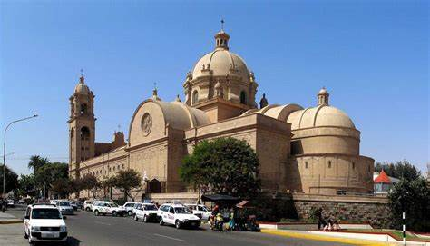

Tacna, conocida como la Ciudad Heroica, se sitúa a orillas del río Caplina en el desierto de la costa de Perú. El departamento que brindó sus servicios a la causa de la independencia de Perú posee más de 15 lugares turísticos para visitar. A continuación listamos los 15 principales lugares turísticos.